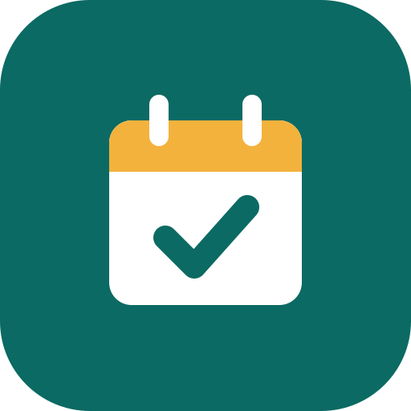

Bacon openen…
Je wordt doorgestuurd naar Bacon. Log zo nodig in met je werkaccount (Microsoft).
Nu openenBacon
Reserveringen in Bacon.
Bacon instellen
Plak één keer de link naar Bacon in SharePoint. Daarna opent de app Bacon direct.

Je wordt doorgestuurd naar Bacon. Log zo nodig in met je werkaccount (Microsoft).
Nu openenReserveringen in Bacon.
Plak één keer de link naar Bacon in SharePoint. Daarna opent de app Bacon direct.